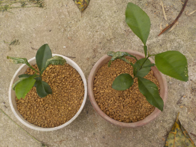
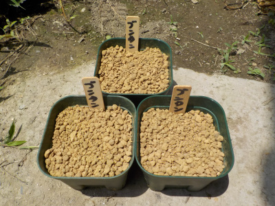
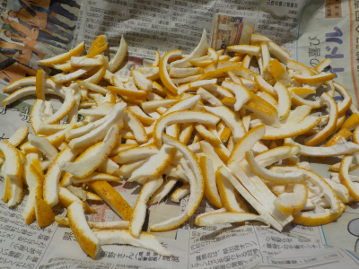
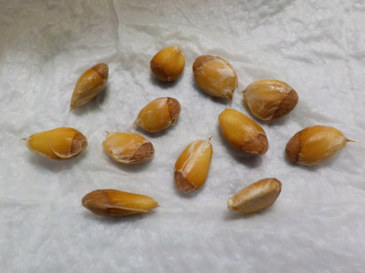

遊びで植物を育てよう
2020/10/04
文旦2本を大きな鉢に植え替えしました。

文旦の実生苗は強いみたいで沢山育っています。
大きいもの2本を大きな鉢に植え替えしました。
害虫に葉っぱを食べられなかったので他より大きくなったかな。
ラッキーな木です。
【文旦TOP】 【果物TOP】 【園芸TOP】
2020/06/28
文旦を土に植えました。

全部ではないですが、半分以上に根っこが出たので土に植えました。
一鉢に3個以上の種が入っています。
柑橘系は虫に葉っぱを食べられるので、多めに入れました。

どこかのホームページにミカンの皮は肥料になると書かれていたので、乾燥させて肥料にしようと思っています。
乾燥させて小さくしてから土に混ぜるそうです。乾燥させる意味ってあるのかな？なんか不思議なシステムです。
【文旦TOP】 【果物TOP】 【園芸TOP】
2020/06/20
文旦を食べたら沢山種が入っていました。

実生の種をいろいろ育てているので、種を見ると捨てれないです。
この文旦の種も育てようと思います。
【文旦TOP】
【果物TOP】
【園芸TOP】
文旦は暖かい土地のイメージがあります。
寒波に弱いのかな？
【おいしいものを食べよう。】【たくさん寝よう。】
【ソロ活をしよう!】【季節感のあることをしよう。】【動画視聴はほどほどに。】【当サイトの全てのコンテンツは無断転載禁止です。】